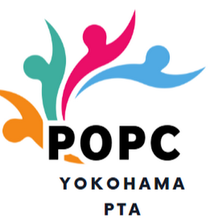

このページは、教育委員会や学校がよく用いる説明を、条文・制度・論理の順に検証するための実務用パーツです。PTAそのものを管理する話ではなく、学校・教職員・学校保有情報・学校徴収の仕組みに対して、教育委員会がどこまで是正責任を負うかを整理します。
PTAは一般的に独立した任意団体として理解されます。他方、学校の教職員、学校口座、学校文書、学校保有個人情報、勤務時間中の労務は、教育委員会の所掌の中にあります。したがって、教育委員会が扱うべきは、学校側の関与の適法性です。
その整理は、PTA内部の自治には当てはまっても、学校職員の労務管理や学校保有情報の取扱いまで免責するものではありません。
教育委員会が是正するのはPTAそのものではなく、学校による名簿提供、会費徴収代行、勤務時間中の事務従事、学校文書との混在など、学校側の行為です。
私人間の委任や準委任の概念を、そのまま地方公共団体の職務権限・勤務時間中の職務内容に横滑りさせています。
学校職員が勤務時間中に従事できるのは、法令・条例・規則その他適法な公務の範囲に限られます。独立団体の事務を、当事者の合意だけで学校職務へ転化させることはできません。
違法性を報酬の有無だけで判断しています。
問題の核心は、勤務時間中の公務員労務、学校保有個人情報、学校名義・学校口座の利用にあります。無償であっても、勤務時間中に私人団体の事務を恒常的に行えば別論点が発生します。
慣行の存在を、法的根拠の代替物として扱っています。
慣行が長いことと、現在の法体系に適合していることは別です。むしろ個人情報保護、任意加入、説明責任の要請が強まる中で、旧来の慣行は再点検されるべき対象です。
便宜を理由に、主体の分離と同意の原則を後退させています。
利便性は改善理由にはなっても、法的根拠の代わりにはなりません。適正化の方向は、便宜を保ちながら分離する仕組みを作ることです。
ここで重要なのは、教育委員会がPTA内部の活動内容を指揮監督するという話ではないことです。是正の対象は、学校という公的機関がどこまで私人団体に資源を供与し、どこまで代行しているかという点です。
このページは、教育委員会への照会、要望書、監査請求、議会質問、面談の下敷きとして使えるよう、反論と再反論を短く切り出せる構造で作っています。
順番は「独立団体論を認める → だから学校側の関与を分離せよ」です。最初からPTAそのものを否定する議論にしない方が、行政実務には通りやすくなります。